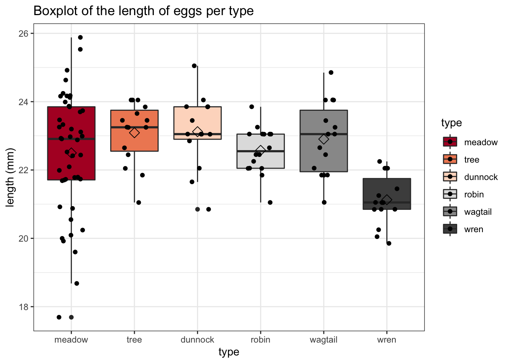

Exercise 7.2: ANOVA on the cuckoo dataset - solution
Lieven Clement and Jeroen Gilis
statOmics, Ghent University (https://statomics.github.io)
1 Cuckoo dataset
The common cuckoo does not build its own nest: it prefers to lay its eggs in another birds’ nest. It is known, since 1892, that the type of cuckoo bird eggs are different between different locations. In a study from 1940, it was shown that cuckoos return to the same nesting area each year, and that they always pick the same bird species to be a “foster parent” for their eggs.
Over the years, this has lead to the development of geographically determined subspecies of cuckoos. These subspecies have evolved in such a way that their eggs look as similar as possible as those of their foster parents.
The cuckoo dataset contains information on 120 Cuckoo eggs, obtained from randomly selected “foster” nests. For these eggs, researchers have measured the length (in mm) and established the type (species) of foster parent. The type column is coded as follows:
type=1: Meadow pipittype=2: Tree pipittype=3: Dunnocktype=4: European robintype=5: White wagtailtype=6: Eurasian wren
2 Goal
The researchers want totest if the type of foster parent has an effect on the average length of the cuckoo eggs.
In theory, they want to study this for all six species. Previously, we looked at a single pairwise comparison between the European robin and the Eurasian wren with a t-test. Here, we will analyse all types simultaneously with ANOVA.
Load the required libraries
3 Data tidying
It seems that the tpye column is a double rather than a factor. Let’s fix this:
4 Data exploration
How many birds do we have for each type?
Visualize the data
Cuckoo %>%
ggplot(aes(x=type,y=length,fill=type)) +
theme_bw() +
scale_fill_brewer(palette="RdGy") +
geom_boxplot() +
geom_jitter(width = 0.2) +
ggtitle("Boxplot of the length of eggs per type") +
ylab("length (mm)") +
stat_summary(fun.y=mean, geom="point", shape=5, size=3, color="black", fill="black")## Warning: `fun.y` is deprecated. Use `fun` instead.
5 ANOVA
To study if the observed differences in average egg length between the different foster bird types are significant, we may perform an ANOVA.
5.1 Formulate null and alternative hypothesis
The null hypothesis of ANOVA states that: \(H0\): The mean egg length is equal between the different bird types.
The alternative hypothesis of ANOVA states that: \(HA\): The mean egg length for at least one bird type is different from the mean egg length in at least one other bird type.
5.2 Check assumptions
Before we may proceed with the analysis, we must make sure that all assumptions for ANOVA are met. ANOVA has three assumptions:
- The observations are independent of each other (in all groups)
- The data (length) must be normally distributed (in all groups)
- The variability within all groups is similar
The first assumption is met, as we may assume that there are no specific patterns of correlation between the randomly selected nests.
To check the normality assumption, we will use QQ plots.

There seem to be no clear deviations from normality.
The third assumption of equal variances seems to be met based on the visualization with the boxplots (see above).
As such, we may proceed with the ANOVA analysis.
5.3 ANOVA model
The p-value of the ANOVA analysis is extremely significant (p-value = 0.0005621), so we reject the null hypothesis that the mean egg length is equal between the different bird types. We can say that the mean egg length is significantly different between at least two bird types on the 5% significance level.
Based on this analysis, we do not yet know between which particular bird types there is a significant difference. To study this, we will perform the Tuckey post-hoc analysis.
5.4 Post-hoc analysis
We will perform a post-hoc analysis, to look at the difference in egg length between each pairwise comparison of bird types. Importantly, with this strategy, the p-values will be correctly adjusted for multiple testing.
The null hypothesis for each pairwise test is that there is no difference in the mean egg length between both bird types.
The alternative hypothesis for each pairwise test states that there is indeed a difference in the mean egg length between both bird types.
We will also calculate the confidence interval on the mean differences.
##
## Simultaneous Tests for General Linear Hypotheses
##
## Multiple Comparisons of Means: Tukey Contrasts
##
##
## Fit: lm(formula = length ~ type, data = Cuckoo)
##
## Linear Hypotheses:
## Estimate Std. Error t value Pr(>|t|)
## 2 - 1 == 0 0.59000 0.39263 1.503 0.65689
## 3 - 1 == 0 0.62143 0.40301 1.542 0.63145
## 4 - 1 == 0 0.07500 0.38332 0.196 0.99996
## 5 - 1 == 0 0.40333 0.39263 1.027 0.90522
## 6 - 1 == 0 -1.37000 0.39263 -3.489 0.00854 **
## 3 - 2 == 0 0.03143 0.48939 0.064 1.00000
## 4 - 2 == 0 -0.51500 0.47330 -1.088 0.88204
## 5 - 2 == 0 -0.18667 0.48087 -0.388 0.99878
## 6 - 2 == 0 -1.96000 0.48087 -4.076 0.00116 **
## 4 - 3 == 0 -0.54643 0.48195 -1.134 0.86270
## 5 - 3 == 0 -0.21810 0.48939 -0.446 0.99764
## 6 - 3 == 0 -1.99143 0.48939 -4.069 0.00113 **
## 5 - 4 == 0 0.32833 0.47330 0.694 0.98169
## 6 - 4 == 0 -1.44500 0.47330 -3.053 0.03171 *
## 6 - 5 == 0 -1.77333 0.48087 -3.688 0.00445 **
## ---
## Signif. codes: 0 '***' 0.001 '**' 0.01 '*' 0.05 '.' 0.1 ' ' 1
## (Adjusted p values reported -- single-step method)##
## Simultaneous Confidence Intervals
##
## Multiple Comparisons of Means: Tukey Contrasts
##
##
## Fit: lm(formula = length ~ type, data = Cuckoo)
##
## Quantile = 2.8893
## 95% family-wise confidence level
##
##
## Linear Hypotheses:
## Estimate lwr upr
## 2 - 1 == 0 0.59000 -0.54443 1.72443
## 3 - 1 == 0 0.62143 -0.54300 1.78585
## 4 - 1 == 0 0.07500 -1.03253 1.18253
## 5 - 1 == 0 0.40333 -0.73110 1.53777
## 6 - 1 == 0 -1.37000 -2.50443 -0.23557
## 3 - 2 == 0 0.03143 -1.38256 1.44541
## 4 - 2 == 0 -0.51500 -1.88251 0.85251
## 5 - 2 == 0 -0.18667 -1.57606 1.20273
## 6 - 2 == 0 -1.96000 -3.34939 -0.57061
## 4 - 3 == 0 -0.54643 -1.93892 0.84606
## 5 - 3 == 0 -0.21810 -1.63208 1.19589
## 6 - 3 == 0 -1.99143 -3.40541 -0.57744
## 5 - 4 == 0 0.32833 -1.03918 1.69584
## 6 - 4 == 0 -1.44500 -2.81251 -0.07749
## 6 - 5 == 0 -1.77333 -3.16273 -0.383945.5 Conclusion
We have found an extremely significant dependence (p-value = 0.0005621) between the mean egg length and bird type on the global 5% significance level.
The mean length of cuckoo’s eggs in nests of the Eurasian wern are smaller as compared to those from all other bird types in the dataset:
- the meadow pipit (adjusted p-value = 0.00856, mean difference = -1.37 mm, 95% CI [-2.50323; -0.23677])
- the tree pipit (adjusted p-value = 0.00112, mean difference = -1.96 mm, 95% CI [-3.34792; -0.57208])
- the dunnock (adjusted p-value = 0.00115, mean difference = -1.99 mm, 95% CI [-3.40513; -0.57773])
- the European robin (adjusted p-value = 0.03184, mean difference = -1.45 mm, 95% CI [-2.81223; -0.07777])
- the white wagtail (adjusted p-value = 0.03184, mean difference = -1.77 mm, 95% CI [-3.16244; -0.38422])
For the other bird types, we have insufficient evidence to suggest differences in mean length of the cuckoo bird’s eggs.